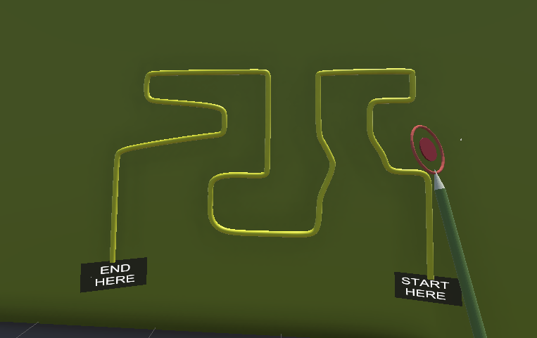
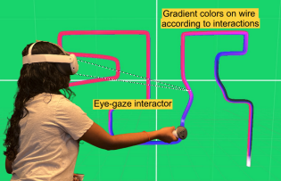
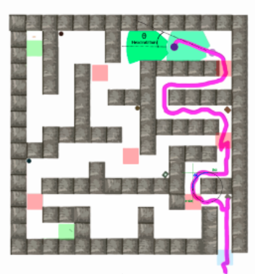
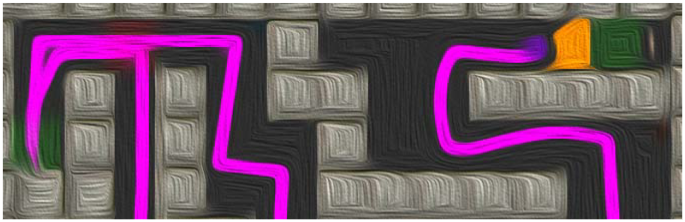
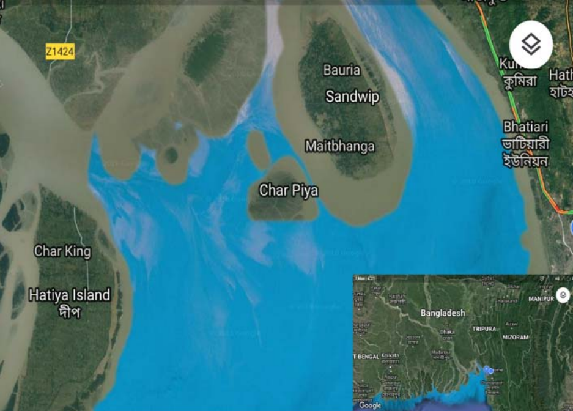
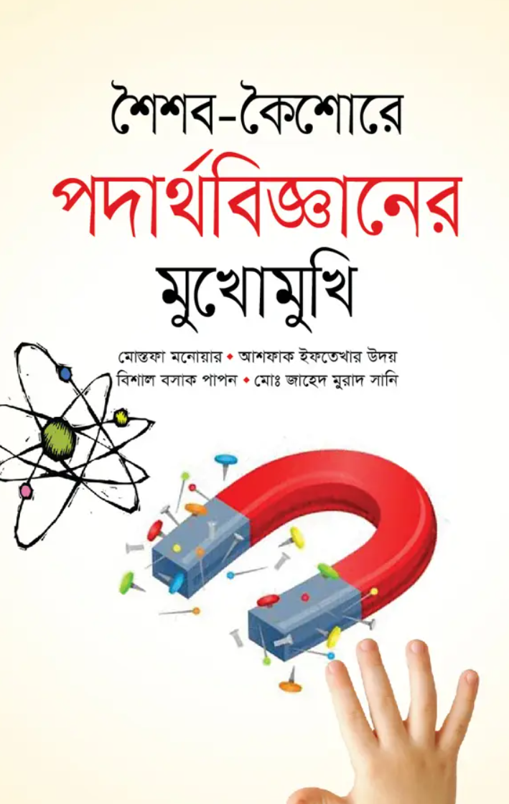
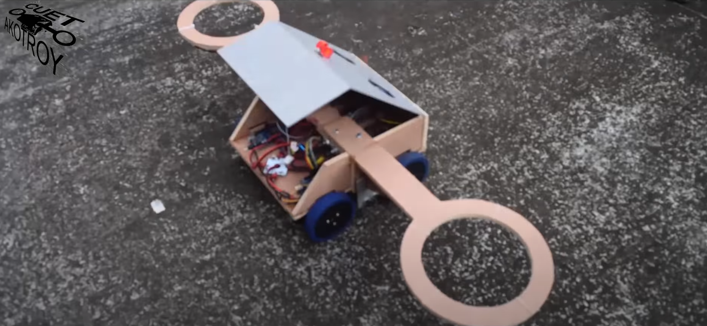

About Me
My academic and professional journey has been guided by a deep fascination with technology, human–computer interaction, and data-driven design. I began as an Electrical Engineer at the
Chittagong University of Engineering and Technology (CUET), where curiosity about circuits and systems evolved into a lasting passion for computational innovation.
After graduation, I joined Walton Digi-Tech Industries Limited as a Quality Control Engineer in the Cellphone Quality Assurance Team. Over eighteen months, I refined my skills in product validation, cross-functional collaboration, and process optimization. That experience revealed the power of integrating hardware precision with intelligent, data-centric software systems.
Today, I am a researcher and VR developer specializing in Virtual Reality (VR), Human-Computer Interaction (HCI), and Data Science. My work focuses on how immersive technologies can enhance accessibility, precision, and user adaptation through empirical measurement and real-time analytics. Using tools such as Unity, Python, and machine-learning frameworks, I study motion precision, cognitive load, and usability in immersive environments.
I am currently pursuing my Master of Science in Computer Science at the
University of Arkansas at Little Rock, where I also completed a Graduate Certificate in Data Science. My research bridges immersive technology, behavioral analytics, and system design—advancing data-driven understanding of user performance in VR.
Ultimately, my goal is to design adaptive, inclusive, and intelligent virtual environments that empower users to interact seamlessly with technology—turning complexity into intuitive experience.
Research & Publications
My research spans Virtual Reality (VR), Human–Computer Interaction (HCI), and Data Science — exploring how immersive environments can enhance human performance, accessibility, and privacy.
My work bridges empirical behavioral studies with data-driven analytics, integrating real-time motion tracking, gaze modeling, and privacy-preserving computation.
Below are some highlights of my recent projects and publications.

Evaluating Adjustment and Proficiency Disparities in Virtual Reality
IEEE VR 2025 — Poster Paper
Examines how VR and gaming expertise affect user accuracy and cognitive load in precision-based tasks.
Findings reveal that users proficient in both domains demonstrate higher efficiency and reduced workload, supporting the design of adaptive VR training systems.
View Publication

Gaze Insights in XR: Real-Time Eye-Tracking Analytics with Elasticsearch
GEMINI Workshop, IEEE VR 2025
Introduces a scalable framework using the Elastic Stack for real-time gaze analytics in VR.
The system supports interactive heatmaps and replay analysis in Unity while implementing privacy-preserving mechanisms for secure gaze data management.
View Publication

Non-Linear Parameterization of Spatial Decision Making in Immersive VR
IEEE VR 2024, Orlando
Explores how spatial decision-making and motor proficiency vary between expert and novice VR users.
Using maze-based environments and neural network explainability (SHAP), the study identifies key performance determinants shaping user adaptation in immersive spaces.
View Paper

Privacy Concerns from Variances in Spatial Navigability in VR
Invited Talk, IEEE VR 2023 — Shanghai
Investigates how spatial navigation patterns in VR may expose sensitive behavioral traits.
Proposes privacy-aware machine learning frameworks for VR and AR platforms to mitigate user profiling and inference risks.
Read Abstract

Affordable Electricity for Bhashan Char from Renewable Energy
IEEE ECCE 2019, Dhaka
Designed a hybrid renewable energy system using HOMER software to supply sustainable power to Bhashan Char,
an offshore settlement for displaced communities. Proposed system cost: 8.9 BDT/kWh.
View Paper
Library Management System
Academic Project
Developed a hierarchical desktop application integrated with an SQL database to manage library operations efficiently.
Strengthened programming and database management expertise.
View Code

Shoishob Koishore Podartho Bigganer Shuchona
Educational Book Publication
Authored the section on Force in a physics book designed to make science engaging for secondary students in Bangladesh.
Emphasizes conceptual clarity and curiosity-driven learning.
View Book

International Outdoor Robotics Competition on Humanitarian Demining
IIUM, Malaysia — 2018
Participated in the first international outdoor robotics competition on humanitarian demining,
gaining hands-on experience with sensor-based navigation and team-based technical problem-solving.
Watch